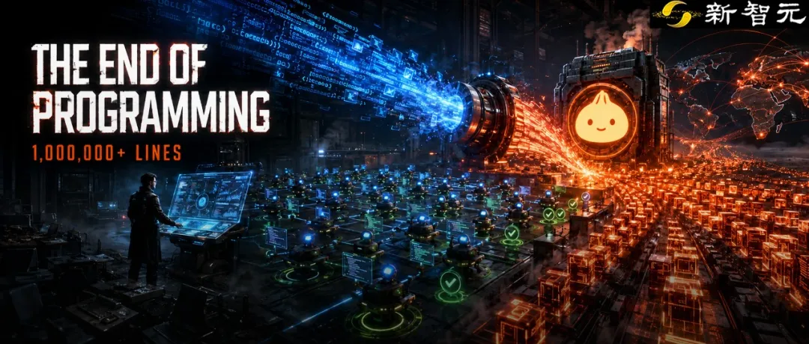
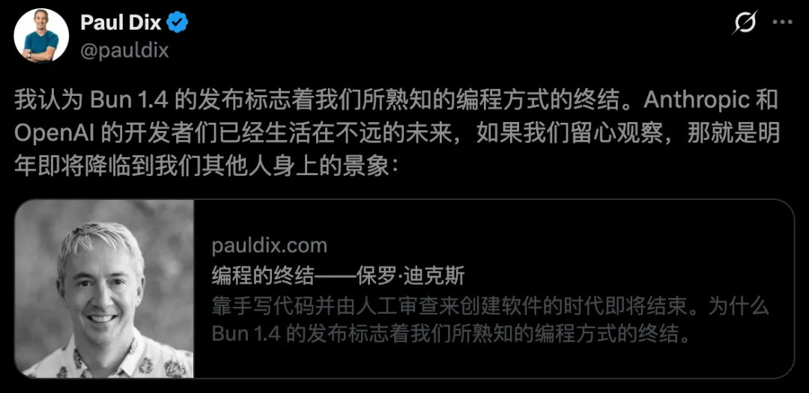
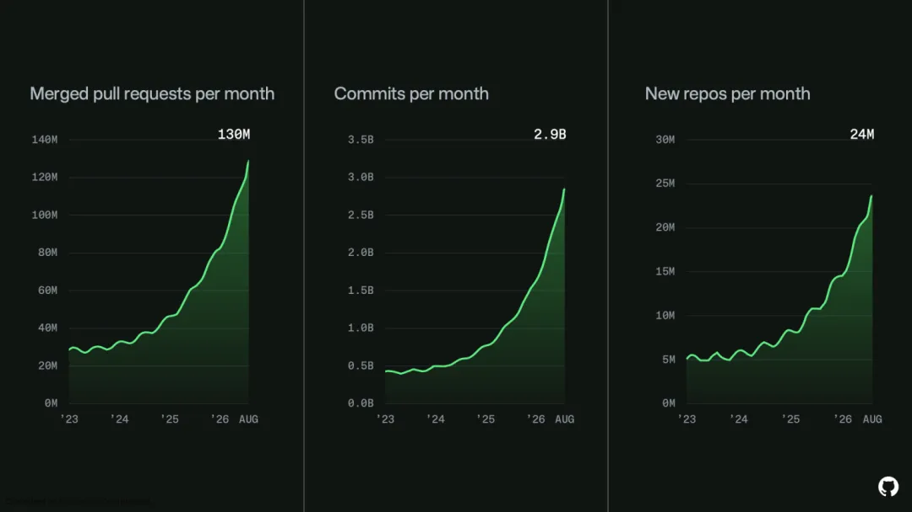

新智元报道
新智元报道

传统编程，真要终结了？
11天，6778次提交，超过100万行新代码。全程Token烧掉约16.5万美元。
最近Bun 1.4正式发布，直接把Bun的大量底层代码，从Zig重写成Rust。
GitHub上的合并记录显示，一次改动就达到「+1,009,257行、-4,024行」。

夸张的是，这100万行代码，并不是几百个程序员一点点敲出来的。
主导整个项目的核心开发者Jarred Sumner，先搭了一套Agent工作框架，然后放AI进去并行重写。
11天后，主体工程基本成型。
随后几个月，Agent继续改Bug、跑测试、反复打磨。
直到今天，这套代码跟着Bun 1.4正式发布，跑在了数百万开发者的电脑上。
InfluxDB创始人Paul Dix看完后，直接写了一篇文章：《The end of programming》。
他直接下判断，我们熟悉的那种「程序员亲自写代码，再让另一个程序员逐行Review」的软件开发方式，正在走向消亡。

Paul Dix真正被震到的，这100万行代码，多到人已经看不过来了。
如果一个开发者一周只能交几个PR，那当然可以认真Review。
但他观察到，OpenAI和Anthropic内部一些开发者，现在一周能交几十甚至上百个PR。

到了这个量，逐行看代码基本就成了不可能完成的任务。
他们的工作方式已经开始变了。
写Prompt、搭Harness、做测试、设验证条件，然后把Agent放进去循环。
代码让机器自己产，人盯结果。Bun 1.4就是这套打法一个很极端的案例。
Jarred没有亲手把100万行Rust敲出来。
他干的活更像搭流水线：先告诉Agent应该怎么迁移，什么结果算正确，再让多个Agent并行推进。
第一版出来后也没有结束，接着继续跑、继续测、继续修。
所以Paul Dix觉得，很多人说「这不就是把Zig翻译成Rust吗」，多少低估了这件事。
翻译出100万行代码不稀奇。
能把这100万行代码一路修到稳定发布，才是关键。
Paul Dix还有一个很有意思的判断。
A社和OpenAI的开发者，现在其实活在「普通程序员一两年后的世界」。
他们能用最新模型，而且Token几乎管够。
普通开发者还在算每周额度，他们已经可以让最强模型一天到晚在后台狂跑。
Bun这次重写，相当于把这种工作方式提前公开演示了一遍：
一个足够聪明的模型，加近乎不限量Token，再加一套靠谱的Harness，到底能把软件生产速度推到什么程度。
当然，人类手写代码不会明天就没了。
大公司流程、责任制度、安全审查，都会让老办法继续存在很多年。
Paul Dix自己也认为，传统编程方式可能还会拖上十年。
但最快的那批人，已经不太像传统程序员了。
他们开始决定需求、拆任务、搭Agent流水线、做验收。
至于下面到底生成了5000行、5万行还是100万行代码，可能都不会亲眼读完。
AI生成代码越多，并不意味着软件天然越好。
恰恰相反。未来一定会出现海量Bug、垃圾代码，以及没人愿意维护的软件。
Paul Dix自己也承认这一点。真正变化的是，生产软件的方法。
以前，代码本身就是核心资产。
未来，大量代码可能从出生到上线，根本没有任何一个人类完整读过。
人类真正需要死死抓住的，是系统行为、测试结果、性能指标、安全边界和用户体验。
代码从「作品」，变成了机器自动生成的中间产物。这也解释了为什么Harness突然变得如此重要。
100万行Rust，可能只是个开始。
以后最值钱的程序员，未必是敲代码最快的人。可能是那个最会让一群AI干活的人。
参考资料：
https://pauldix.com/the-end-of-programming
https://x.com/pauldix/status/2092364350438674860?s=20
编辑：桃子